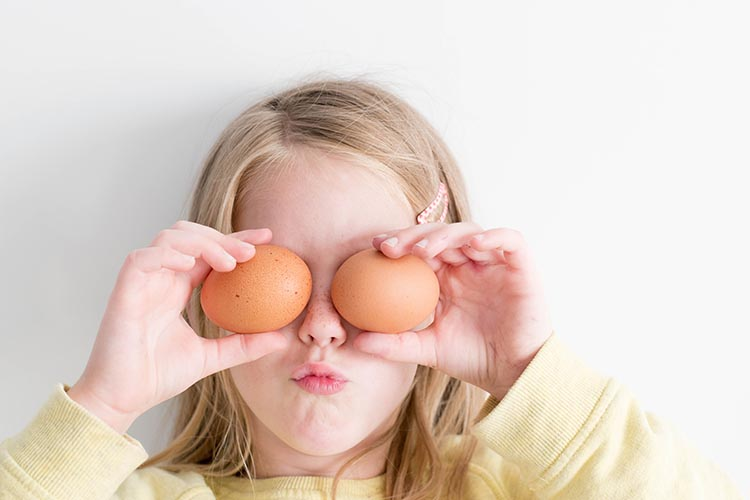

Bubble and Squeak Pre-Schoolers
We provide workshops for Mums or Dads with the pre-schoolers. These are aimed at children aged 2-5 and are a great opportunity for parents to bond with their children in a fun kitchen environment where you don’t have to worry about the mess! We do all the cleaning up afterwards!
In these sessions, we focus on food tasting and letting children experience new tastes and textures and then creating something to take home. This could be decorating pre-made biscuits and cupcakes, making fruit salads or creating savoury dishes such as omelettes.
We might also fit in a sing song if there’s time!
